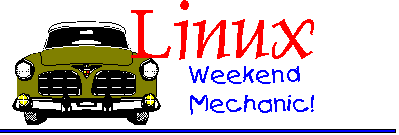

Well Howdy. Glad you could all make it. How are you all??? Still keeping up the pace with the rest of the LG thus far? I hope so, 'cos I can't see that this article is going to be any different :-)
News for this month?? Well, I have installed myself in my house now. When I get the chance, I'll get some pictures together for you all to have a sneak preview into the isolated, but pretty corner of Somerset that I now reside in when I am not at University, that is.
I also have a new job!! I work in a small factory, which produces eight different types of luxury dessert for a chain-store called Waitrose. For those of you who don't know who this company is, Waitrose is part of the John Lewis Partnership, plc. They specialise in nice, high quality food. For the really curious among you, here is a list of the desserts I make:
I start at 6:00am :-) That's the only the drawback. However it does mean that I finish around 2-4 in the afternoon.
That's about as exciting as my life gets really, I think it is time to move on to some proper material. Linux.....
Way, way back in issue 13 Jim Dennis wrote a small article about how to set up your Linux machine so that it would tell you if you were going to run out of disk space. (SLEW). I read this article, and decided that you can make sure that your users do not run amok on disk space by enforcing a set rules by either specifying the number of inodes or blocks that a particular user cannot exceed.
Quota is handled on a per-user basis though, and is only active on one file system at a time. Thus, if a user has access to more than one file system, and you wish to enforce quotas on each of them, then you must do so separately.
So in short, quota is a way of setting maximum disk space that a user can consume, at any one time
As of Kernel version >=2.0, Quota support has been bundled in with the kernel, and as such, if you come from the dark ages, and have a kernel version <2.0, then obtain the latest source (www.kernel.org) NOW!!
And as for the rest of the GNU/Linux planet, you should find that you already have quota support enabled by default in the kernel anyway. If you think you have not, then download the latest stable release and re-compile. It can't hurt.....much :-). For instructions on how to do this, please refer to the INSTALL file, under the source directory.
Incidentally, for those users running a nice shiny SuSE Box, Quota automatically comes compiled into the kernel :-)
But the fun-and-games continue, since Quota is not directly runnable from the kernel itself (i.e. it is not a self-contained module). You have to either install an RPM for Source file.
The RPM file (should you be using a distribution that uses this system of package handling) in question is:
quota-1.70-263.rpmAnd the tarball file is called:
all.tar.gzBoth of which are available from the following FTP repository:
ftp://ftp.funet.fi/pub/Linux/PEOPLE/Linus/subsystems/quota/To install the RPM file:
Issue the command:
su - -c'rpm -i /path/to/quota-1.70-263.rpm'To install the source file
1. su - 2. cd /path/to/tarball/ 3. tar xzvfm ./all.tar.gz 4. ./configure[ Allow for configure script to run ]
5. make && make install 6. logout[ To exit out of root's "su;ed" account ]
That's all there is to it :-) Now the real fun begins
The first step in configuring this, is to have a logical idea in your head as to how you are going to organise this. Quota gives you the option of either specifying a single user, or a group (which has been assigned to specific users), or both. If you are on a large network, then perhaps a mixture of the two is preferable. Think about it :-)
Group version is usually good, if you assign all users to that specific group. Makes life easier, n'est pas?
But the first actual step is to make some system-wide changes. For this, log in as user root. Please though, do not simply "su" in, as this simply changed your effective UID, and does nothing about export variables, etc.
We must first modify "/etc/fstab" so that the kernel knows that the filesystem mount point will make use of the quota support. A typical "/etc/fstab" file looks like the following:
/dev/hda1 /boot ext2 defaults 1 2 /dev/hda2 swap swap defaults 0 2 /dev/hda3 / ext2 defaults 1 1 /dev/cdrom /cdrom auto ro,noauto,user,exec 0 0 /dev/fd0 /floppy auto noauto,user 0 0 proc /proc proc defaults 0 0 usbdevfs /proc/bus/usb usbdevfs defaults 0 0 devpts /dev/pts devpts defaults 0 0 #NFS clients.... #Updated: Thomas Adam, Tuesday 03:45am??? -- Can't remember. server:/etc /mnt/etc nfs rw,user,rsize=1024,wsize=1024,hard,intr 0 0 server:/home /mnt/home nfs rw,user,rsize=1024,wsize=1024,hard,intr 0 0 server:/usr/doc/lg/lg/lwm /mnt/lwm nfs rw,user,hard,intr 0 0 #server:/usr /mnt/usr nfs rw,user,hard,intr 0 0 server:/cdrom /cdrom nfs ro,user,rsize=1024,wsize=1024,hard,intr 0 0 server:/dev /mnt/dev nfs ro,user,rsize=1024,wsize=1024,hard,intr 0 0
What we are concerned with, is not the last part of the file [ ** although quota can be used with nfs exported file types -- see "man rquota" ** ], but with which mount point is to be issued with quota support. This will depend upon where your user's $HOME directories are located. Unless you have got a separate partition or drive for this, then typically the mount points you will want to use is either "/" or "/usr" (if /home is a symlink to "/usr/local/home/" -- and "/usr" is on a separate drive or partition.)
Now I come back to my original question that I first posed at the beginning of this section. How are the users going to be managed? If you have decided to do it just on a user by user basis, then add usrquota to your fstab file. If you are going to do it by group then add grpquota. If you are going to use a mixture of the two, then add them both.
Thus, we are now concerned with adding to the fourth field the following:
/dev/hda3 / ext2 defaults,usrquota,grpquota 1 1
Change as appropriate for your version of fstab. If you are unsure as to which quota to use, I recommend that you include both in the fstab file, since it means that should you need to swap, you'll already have it set up. Now save the file.
OK. The next thing we have to do is to make sure that for whichever option you chose (i.e. namely usrquota or grpquota), that you create the necessary file(s) on the root of the partition that you changed in the fstab file. To do this, enter the following commands (still as user root)
touch /top/of/partition/quota.user && chmod 600 /top/of/partition/quota.user touch /top/of/partition/quota.group && chmod 600 /top/of/partition/quota.group
Lastly, you have to ensure that when your system boots up, that quotas are enabled along with it. For those of you who installed Quota from an RPM/.DEB, etc should find that they already have a script named "quota" or something similar in "/etc/init.d/". If you installed from source however, this might not be the case, which means that you will have to add the following script into your main init-script AFTER the mounting of all files in "/etc/fstab" has taken place.
(text version)
#Check quotas
[ -x /usr/sbin/quotacheck ] && {
echo "Checking Quotas (please wait)...
/usr/sbin/quotacheck -avug
echo "Done."
} || {
echo "Checking Quotas FAILED"
}
[ -x /usr/sbin/quotaon ] && {
echo "Initialising Quotas..."
/usr/sbin/quotaon -avug
echo " Done."
} || {
echo "Turning Quotas On: FAILED
}
What the above does, is runs a test on the named file, for the "-x" flag which means that it is checking to ensure that the file is executable, before it processes the rest of the script. It checks to see what quotas are defined (if any), and then goes on to enable them.
Once you have done that, issue:
init 6
And wait for your computer to reboot.
Caveat Emptor:
If you did have to recompile your kernel, ensure that if you are using LILO
as your boot-loader that you run:
lilo
BEFORE you reboot so that it knows about your new kernel-image
:-)
Right. We should now have your machine acknowledging the fact that we are going to use Quota. What we haven't done yet, is the most important bit, and that is, who or which groups will be using the quota rule.
What I have decided to do, is to use an example if a user, and show you how you go about setting up a quota limit for him. We shall call the user lg.
Assuming lg is already on your system, what we must do is, depending on which format you are using, edit the appropriate file. For the purposes of this example, I shall do this on a per-user basis (i.e. I shall be using the usrquota format, although everything I shall explain here, is exactly the same for the grpquota option, if you have decided to do that.
The command that we shall be using is called "edquota" What we must do is edit a quota for user lg by issuing the command:
edquota -u lg
What this does, is launches an editor, and opens a new quota. If you haven't set the environment variable EDITOR="/usr/bin/jed" or some equivalent editor, then this command will not work. To set up this variable, add this to your "~/.bash_profile"
EDITOR="/usr/bin/jed" export EDITOR
Change the program as you see fit, i.e. Vi, jed, joe, emacs, etc. Then to make the changes active, source the file, by typing:
source ~/.bash_profile
What you should find, is that for user lg you get something similar to the following:
Quotas for user lg:
/dev/hdb2: blocks in use 0, limits (soft = 0, hard = 0)
inodes in use: 356, limits (soft = 0, hard = 0)
Now your thinking: "err...." :-) Don't worry. It is much more simpler than it looks.
Blocks indicate the total number of blocks that a user has used on a partition (measured in Kilobytes, KB).
Inodes indicate the total number of files that a user has on the partition. N.B. These values you cannot change.
What we are concerned with, is the bit in brackets, right at the end of each line. This is the key to setting the entire quota. You'll notice that there are two options, one for soft and one for hard.
Soft limits indicate the maximum amount of space (in Kilobytes) that lg is allowed to have. It acts as a boundary which when set along with a grace period informs to user lg that he is exceeding his limit.
A grace limit is a period of time before the soft limit is enforced. This can be set from (sec)onds, (min)utes, hour, day, week, month. This is set by issuing the command:
edquota -t
You'll see that you should get the following:
Time units may be: days, hours, minutes, or seconds Grace period before enforcing soft limits for users: /dev/hdb2: block grace period: 0 days, file grace period: 0 days
Change both values for block and file to whatever you see fit. I recommend 14 days (2 weeks) for both. But then, I am generous :-)
A hard limit indicates the maximum amount of space that a user cannot exceed. This only works when a grace period has been set.
That's all there is to it. Now, you are probably wondering how the hell you are supposed to assign the same quota to every user on your system. Well, having just followed the example for lg, what you can do, is to use user lg as a template, and issue the command:
awk -F: '$3 >= 500 {print $1}' /etc/passwd'
What this does, is prints a list to the screen of all users who start with a UID greater than 499 (i.e 500 onwards). If this set of users on the screen looks OK, then we can use the above, in conjunction with the edquota, as shown below:
edquota -p lg $(awk -F: '$3 > 499 {print $1}' /etc/passwd')
This uses the quota we have already enabled for lg as a template to assign it to the string of users that the awk script produces for us.
That's all there is to it :-). I have found quota to be an excellent tool in keeping users at bay. I use it for my non-root account, as it stops me from going wild in my home directory, and thus forces me to clean it out once in a while.
For those of you who followed my last miniature introduction to the world of linux proxying for Squid and SquidGuard, will remember that I showed you how you could filter certain webpages that matched a certain regex. What Dansguardian does. is take the concept of filtering and stretches it so that you can filter webpages, based on content!!. Also though, Dansguardian allows you to filter out mime-types and block file extensions, thus meaning that should your users have the unfortunate punishment of using an M$-Windows machine, you can block files such as .exe, .com, .dll, .zip .... etc
Dansguardian can be obtained from the following:
http://www.dansguardian.orgYou can either download an RPM or tar.gz file from his site. If you're a budding Debian GNU/Linux user, then you can always use the alien package to convert the RPM file to a DEB file :-). To actually install the files, follow the instructions as in the Quota section.
It is also worth noting, that Dansguardian requires the use of the nb++ library. There is a link to a download site, on the main site of dansguardian. This library is used to look at the content of webpages, and is thus essential to the operation of Dansguardian.
On install, dansguardian, main program is installed as "/usr/sbin/dansguardian". What you must do, is either in "/etc/init.d/rc.local" OR "/etc/init.d/boot.local" (depending on which distribution you are using), add:
/usr/sbin/dansguardian
So that Dansguardian is loaded up on init.
There really is not too much to configure when it comes to Dansguardian. What takes all the work, is the various regex expressions that you may want to build for really accurate content filtering.
It should be pointed out that DansGuardian can be used in conjunction with SquidGuard so that you don't have to replace any existing filters that you may already have in place :-) Good, eh?
So, the first thing we should do, is check where the package has put the configuration files. Well, it should be no surprise that they have been out in "/etc/dansguadian", and it is the files contained in this directory that we shall concentrate on. We shall begin by looking at the configuration file /etc/dansguardian/dansguardian.conf.
This is all the settings that Dansguardian will require. Typically, the only options that I have had to change are listed below:
#DansGuardian config file
[Reporting]
reportinglevel = 1 # 0 = just say 'Access Denied'
# 1 = report why but not what denied phrase
# 2 = report fully
[Network Settings]
filterport = 8080 # the port that DansGuardian listens to
proxyip = 127.0.0.1 # loop back address to access squid locally
proxyport = 3128 # the port DansGuardian connects to squid on
accessdeniedaddress = "http://grangedairy.laptop/cgi-bin/dansguardian.pl"
[Logging] # 0 = none 1 = just denied 2 = all text based 3 = all requests
loglevel = 2
[Content Filtering]
bannedphraselist = "/etc/dansguardian/bannedphraselist"
bannedextensionlist = "/etc/dansguardian/bannedextensionlist"
bannedmimetypelist = "/etc/dansguardian/bannedmimetypelist"
exceptionsitelist = "/etc/dansguardian/exceptionsitelist"
exceptioniplist = "/etc/dansguardian/exceptioniplist"
[Phrase Scanning] # 0 = normal 1 = intelligent
scanningmode = 1
# normal does a phrase check on the raw HTML
# intelligent does a normal check as well as removing HTML tags and
# multiple blank spaces, tabs, etc - then does 2nd check
[ ** Many other options elided ** ]
The only things I changed here, was the filterport, the proxyport and the accessdeniedaddress tags, to reflect the configurations I used in "/etc/squid.conf". Having changed your options accordingly, you can save the file, and ignore it :-)
OK, moving on. In the same directory, you should notice files with the following filenames:
I shall take each file in turn, and explain what each one does. Where appropriate, I shall list small portions of the file.
bannedphraselistThis file contains explicit words and as such, I shall not list its contents here. Suffice to say, this is the file that holds keywords which are blocked if found anywhere in the HTML page.
As you will see, each word is enclosed within < > signs, as in:
< sex >
These angled brackets are important, since without them, the word would not be blocked.
You will also notice, throughout the file that some words have a space either side of the angle brackets, and some only have one space, either end of the bracket. This is important, since it says to dansguardian how to block the word.
< sex >
Indicates that the word sex (and only the word sex) should be blocked when it is found, nothing more.
<sex>
Indicates that the word sex should be blocked, regardless of where it is found in a sentence or phrase. I.e. if it is found in hellosexyhowareyou? then it will be blocked.
< sex>
Means that anything is blocked, to the left of the word.
<sex >
Is the converse of the above.
As you look down the file, you'll see a number of different words which are being blocked. :-) You will also notice that there a number of comments of example words or hyphenated phrases which are not blocked, because you have already blocked part of that word. For example:
<middlesex>
Need not be blocked, since the phrase:
<sex>
is already blocking any other word that contains the word sex. That is an important fact to remember of you are going to be adding to the list at a later date.
bannedextensionlistSimply contains a list of file extensions that will be blocked by dansguardian, thus:
#Banned extension list .gz .tar .zip .mp3 .mpeg .mpg .avi .exe .sys .ini .bat .doc .xls .scr
This is pretty much self explanatory!!
bannedmimetypelist# banned MIME types audio/mpeg audio/x-mpeg audio/x-pn-realaudio video/mpeg video/x-mpeg2 video/acorn-replay video/quicktime video/x-msvideo video/msvideo application/gzip application/x-gzip application/zip application/compress application/x-compress application/java-vm
MIME types are used to identify different multi-media portions of applications, and as such is particularly useful when sending e-mail, however MIME has its uses in HTML too :-)
Again, I would add some other options here.
exceptionsitelistLists those sites which, are allowed to be viewed, even though it would ordinarily be blocked by the rules defined in any of the other files, thus:
#Sites in exception list #Don't bother with the www. or #the http:// jadeb.com
You can obviously add more sites as you are going along :-)
exceptioniplist#IP addresses to ignore and just #pass straight through. # #These would be servers which #need unfiltered access for #updates. Also administrator #workstations which need to #download programs and check #out blocked sites should be #put here. # #Only put IP addresses here, #not host names 192.168.0.1 192.168.0.2 192.168.42.2 #these are examples above #delete them and put your own #in if you want
The comments in this, pretty much say all :-). Obviously I would say be careful as to which machines you allow override access to :-)
And that rather short explanation explains how dansguardian works. You may well find, as I did, that it is very frustrating at first, since it really does block what you tell it to, but once you yourself have shoved a whole load of domain names into the exceptionsitelist, things should not be too bad at all! :-)
In issue66, there appeared a thread about how to recursively touch files in a given directory. Since the GNU version of touch does not support an option (yet), a few suggestions were offered using GNU find.
Indeed I was intrigued by this idea. I have often been in a situation where having a recursive feature to touch all files and/or directories was a necessity. Such an example is where I had forgotten to add the "m" flag to the tarball I was un-tarring, and as a result had a while load of future modification dates on my files (See issue79). Deleting the entire directory would have been a pain, since it took ages to untar. Thus, I decided to write the following shell-script :-)
(tar.gz file)-----------------
#!/bin/bash
##########################################################
#touchrec -- Recursively "touches" files in a directory #
#Ackn: Written for TAG (Linux Gazette) :-) #
#Version: Version 1.0 (first draft) #
#Author: Created by Thomas Adam #
#Date: Saturday 15 June 2002, 16:58pm BST #
#Contact: thomas_adam16@yahoo.com #
##########################################################
#Declare Variables
bname=$(basename $0) #Basename of program (path stripped)
curr_dir=$(pwd) #Current dir
dironly=0 #-d off
filesonly=0 #-f off
quiet=0 #-q off
toplevel= #-l off
redir=$(tty) #verbosity redirection tag
version="$bname: Created by Thomas Adam, Saturday 15 June 2002, 16:58pm BST,
Version 1.0"
#Start Procedures
#Help Procedure
help_user()
{
echo "
$bname usage: [-s directory path] [-q] [-d] [-f] [-t] [-h] [-v]
where:
-s (optional starting directory, default is 'pwd')
-q (quiet mode -- suppresses verbosity)
-d (only touch directories)
-f (only touch files)
-t (touches the top-level directory, i.e. '.')
-h (prints this message)
-v (version of program)
Issue command \"man \\1 touchrec\" for full documentation
"
exit 0
}
run_default ()
{
for lists in $(find ${curr_dir} ${toplevel} -depth 2> /dev/null); do
#If it's a directory....
[ -d $lists ] && {
#All directories -- yes
[ $dironly = 0 ] && {
#Just the files? -- continue to the next instance of a loop, if so
[ $filesonly = 1 ] && {
continue
}
echo "touching dir $lists/" >$redir && touch -c $lists
continue
} || [ $dironly = 1 ] && {
#then we are only checking for directories
echo "touching dir $lists/" >$redir && touch -c $lists
}
#This time check for files...
} || [ $dironly = 0 ] && {
[ -f $lists ] && {
[ $filesonly = 1 ] && {
#Only checking for files....
echo "touching files $lists" >$redir && touch -c $lists
continue
} || [ $filesonly = 0 ] && {
#As a result of no flags passed at run-time, this executes :-)
echo "touching files $lists" >$redir && touch -c $lists
}
}
}
done
}
#Main
#Check for presence of command-line switches
if [ "$#" = 0 ]; then
echo "No command-line args given"
curr_dir=$(pwd)
else
while getopts ":hqlfvdts: " opts; do
case $opts in
d )
#Only Check for Directories
dironly=1
;;
q )
#Quiet -- suppresses verbosity to console
quiet=1
redir="/dev/null"
;;
f )
#Only check for files, no directories
filesonly=1
;;
t )
#Only process the top-level directory "."
toplevel="-maxdepth 1"
#echo $toplevel #for debugging purposes
;;
s )
#Get path as specified
#If $optarg is blank, print help_user()
[ $OPTARG = "" ] && {
echo "No Parameter Given"
help_user
} || curr_dir=${OPTARG}
;;
h )
#Print help message
help_user
;;
v )
#Prints the version
echo $version
exit 0
;;
-* | * )
#Any other options -- ignore
help_user
;;
esac
done
fi
#Process optional commands...
shift $(($OPTIND - 1))
#Start main procedure -- once all options processed.
run_default
-----------------
For those of you who are completely new to BASH programming, please refer back to Ben Okopnik's excellent tutorial earlier on in the LG series (issue52 onwards). For those experienced programmers, you'll notice that I have used the "[ ..... ] && {} ||" construct, rather than the more traditional "if..then..else..fi" method, since the former gives more control with exit status :-), and I prefer coding like this anyway. Perl also requires this syntax too :-)
The script in itself is quite simple. Basically what happens is that I initialise all of my variables first. Now, BASH does not require this, but I find it much easier to know what's going on if I do.
I set up various variables, most of which are just switch identifiers so that I can tell whether or not any command-line switches (and which ones) have been issued. I set up another variable bname which returns the name of the program, with the PATH stripped, which I used in my help_user() function.
The other variable I defined is the redir variable. This is initially set to whichever tty you invoke the script from, so that if you did not specify the "-q" option, you will get messages to your screen. I think I have been quite clever since, whenever a file/directory is found, I issue a command thus:
echo "touching $lists/" >$redir
which, as I say is set to whatever tty you invoked it from. (/dev/tty1)???. But, if you specified the "-q" flag $redir equals "/dev/null" so that no messages appear
With regards to command-line switching, I have made good use of the getopts command. Refer to man 1 touchrec for more information on that.
I was so taken by this, that I even wrote a manual page :-). Simply download the tar.gz file, untar it, and run "install.sh"
For more information about how to use this script, please refer to "man touchrec". Hope you get good use out of it :-)
How many of you have been guilty of using mc (midnight commander), hitting the key sequence "<ALT><SHIFT><?>" before, and then filling out that nice dialog box to find the file that you require?? Don't lie, we've all done it (Hi Ben :-)). And why? All that dialog box is, is a front end to the command find(1) anyway. This article will help try and wean you off pretty command-line dialog boxes. While there is nothing wrong with using mc's searching feature, it does not give you the full benefit to do complex searches. GNU find is a very powerful tool indeed.
The most common use of find, is knowing where a certain file is. Now, usually, if it is a binary file, you would most likely either use the commands which and where to find it :-), but what if you were looking for that file called etherh.c? You'd issue the command:
cd / find / -name etherh.c -print 2>/dev/null
Now don't panic :-) The syntax of the find command is thus:
find {/path/} [name_of_file/expression] [options...]
So, what the command does, is beginning at "/" (the root directory of the partition), search for the file called etherh.c, when it finds it, -print it to stdout (and in this case the 2>/dev/null redirects any errors to oblivion. -- used here because I am not user root I obviously have permission problems looking at certain files from "/" that I don't care to know about!).
The -name flag above has more than just one use as shown here. It is in fact a flag which allows you to pass shell metacharacters to the filename that you are trying to look for, and we will discuss that in the next section.
If you have your kernel sources installed, you should find that the file, is at:
/usr/src/linux/drivers/acorn/net/etherh.c
It is all very well, knowing the exact name of the file that you trying to search for. That makes life easier. But what if you didn't know the exact name of the file, what then?
Well, in that situation, you would obviously have to use wildcards, or more specifically shell metacharacters. These are characters such as:
*
?
[]
{} -- [ although these have their uses as we shall see later on ]
Quite simply then, we can try something like the following:
find /usr/bin -name 'xa*' -print
Which should return:
/usr/bin/xargs
The sharp eyed among you will have noticed that I
You can also tell find to run a program on the file(s) that it finds too. This is an extremely useful feature, and you will be surprised at just how often you will have cause to use it.
Suppose you have a bunch of files, say in $HOME, and I wanted to look for a regular expression in each of them, i.e. "#!/bin/bash". I can do the following:
find $HOME -name '*' -print -depth -exec egrep -n '#!/bin/bash' {} \;
The syntax of the last part, may seem strange, but what is happening is that the flag
-execaccepts first the command, and then any addition options (in this case, a regular expression), followed by two brackets {} which when run, will be expanded to the current filename which is returned by the find parameter (be it a regular expression or specific filename -- in this case all files (*). The backslash (\;) terminates the command.
Therefore, in short, the syntax is:
find -path -name {pattern/regex} -exec {name_of_program} [options] {} \;
You can then apply this principle to use any command that you can see a use for :-)
Once again, find makes our life even easier, by allowing us to look for specific file types. Now, while you might well think that you could use a combination of
ls, test, findto do the same thing, don't re-invent the wheel :-). Here are some examples:
find / -name '*' -print -depth -type d
-- which prints only directories
find / -name '*' -print -depth -type f
-- which finds only files
find / -name '*' -print -depth -type l
-- finds symbolic links only
If you only want to search say, on the top-level directory, and not traverse any lower, then you can use the:
-maxdepth {number}
switch. For example, if you only wanted to search for directories which is in your $(pwd) -- (current working directory) you can do:
find / -name '*' -type d -maxdepth 1 -print
Which on my computer (laptop) returns the following:
/ /lost+found /boot /proc /var /tmp /etc /sbin /bin /lib /root /usr /cdrom /floppy /home /mnt /opt /dev /chess /pavement
The number indicates the number of subdirectories that you wish to descend during your search.
But the fun doesn't stop just with this mini-article. find has a whole host of other options many of which I cannot ever see the need for, but that's only because I have a limited use for it.....
Definitely check out the command:
man findDear Thomas, I want to say thanks for keeping up the "Weekend Mechanic" column in the LG. I have to admit that I've had little time for pleasure reading (and much less for writing) these past several years. On a whim, I started reading the latest LG (after seeing an announcement for it on the lwn.net site) and noticed the WM column was still there. I'm absolutely delighted that you're keeping it going and wish you the very best. Trust your end-of-semester exams go well. Have a great summer 'linuxing. cheers, John p.s., kudos for providing "install from source" instructions for squid. I suppose that a growing number of users are simply dependent on rpm or deb binaries (and there are good reasons for using these) but I still tend to "roll my own" from source and make a package out of it when I'm not feeling so lazy :-)[Thomas]
Hello. I must say that I feel *very* honoured to have received an e-mail from you -- especially as you founded the Linux Gazette :-) You have no idea just how much I valued your efforts way back in 1996. Had you any idea that the LG would be as popular as it is now?[John]:
Absolutely not. I started getting interested in Unix/Linux during the summer of 1994. I had just switched from being a general surgery resident at a very busy tertiary care hospital to working as a research assistant in the lab of one of the hepatobiliary surgeons. I managed to get a dial-up account on the universities VAX machine (2400 baud :-) and started using gopher. Somehow, I ran across information on Linux and decided to give it a try since I was interested in doing a medical informatics fellowship. It took countless days to download the installation floppy set from TAMU (Texas A&M Univ.). I had a 2 MB limit on my shell account so I would ftp an image to the account and then turn around and transfer it to my local box via kermit. TAMU was the first distribution I ever tried. Almost immediately, I decided to give Slackware a try -- it was the "new kid on the block" and was supposed to be so much better than SLS. That was August, 1994. After playing with Linux for a year or so I decided that I wanted to learn how to write HTML and so the Linux Gazette was born out of similar "itches": learning Linux and learning HTML. I absolutely loved Linux, and do so to this day, so it was easy to come up with content. I just wrote about the things I loved and found exciting. I had no earthly notion that it would be that popular. I had a good deal more time on my hands back then and so I was able to do almost everything -- write columns, coordinate inclusions by others, format the entire batch so that the HTML was at least reasonably "legal", etc. About a year later (issue 8) I was in over my head and was now back in school full time working on a computer science degree (actually, I was a non-degree seeking graduate student, but I took the entire computer science curriculum and enough math courses for a math minor). Phil Hughes from the Linux Journal got in touch with me. He was interested in an online magazine of this type and offered to take over the administrative work. So, I was terribly relieved to turn the reins over to him and continue writing.[Thomas]:
I started reviving your article several months ago. Although I started submitting articles once a month, they have been more intermittent of late, due to University work getting in the way :-([John]:
Brother, I know that feeling... :-)[Thomas]:
Incidentally, I hope you didn't mind me, re-using your article name, and images. I had tried to get in contact with you, to ask your permission, but it seems that you don't mind :-)[John]:
Not in the least. I'm absolutely delighted that you've done this and wish you the very best.[Thomas]:
If time permits, you should start reading the LG. It would be nice, if you could send an e-mail to the editor :-) Just to say, hi. I'm sure that'll cause quite a stir.....especially with Jim Dennis :-)[John]:
I'll do that.[Thomas]:
What are you doing these days??? Your last ever article said that you'd finished your degree (congratulations) and was going to work for a medical centre?? Is this still the case?? How is your wife??[John]:
At the moment, I'm within a couple years of finally finishing up my medical training! I went on to do a brief medical informatics fellowship under Drs. Randolph Miller and William Stead at the Vanderbilt University Medical Center and then decided to finish my formal medical training in Pathology. I matched at Yale (here in New Haven, Connecticut) and have completed 2 years of Anatomic Pathology training. This year, I was able to take a year off to do some medical informatics research with Dr. Prakash Nadkarni. We've just finished writing our first paper (in information retrieval) and I'm working on two additional projects. I start back "on the wards" as a Clinical Pathology (AKA, Laboratory Medicine) resident on July 1. Life has gotten a rather busy of late. My wife and I adopted a little girl from China in August, 2000. She's a cutie pie, but definitely takes a good deal of what little "free time" we had left :-). Any more, I try to keep up with things in the Linux Community but I've had no time to write. What distribution are you using?[Thomas]:
I'm using SuSE 7.1, soon to switch back to using Debian[John]:
I'm still using Slackware :-). You mentioned that you've been using Linux for around six years. That's long enough that you've probably given a number of distributions a whirl. I have to say that I really like Mandrake, and I've run Debian for short time. Eventually, however, managing the *.deb's and *.rpm's becomes a headache and I start fighting with the package manager. In time, I just get disgusted and go back to Slackware. It's stable, Patrick V. does a nice job of keeping current without pushing too far toward the bleeding edge. And I still compile nearly everything from scratch.[Thomas]:
Thanks again John :-) Keep in touch,[John]:
You too. Best wishes, John -- John M. Fisk, M.D. Postdoctoral Research Associate, The Yale Center for Medical Informatics Yale University School of Medicine, 333 Cedar Street, PO Box 208009, New Haven, CT 06520-8009 email: John.Fisk@yale.edu phone: (203) 764-8132
Oh well, until next month -- take care.
 |
Send Your Comments | |
Any comments, suggestions, ideas, etc can be mailed to me by clicking the e-mail address link below:
mailto:thomas_adam16@yahoo.com
 Thomas Adam
Thomas Adam